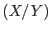
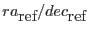
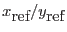
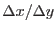
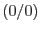

Ordinary X/Y sky images have a FITS representation
that adheres to the World Coordinate System conventions specified in
[1]. In practice this means that the conversion from
tangent plane image coordinates  to Right Ascension/Declination
of the mean geocentric equatorial reference frame and vice versa is
uniquely given by the following set of column attributes:
attribute name
meaning
X/Y system
X_MOV/Y_MOV system
TCTYPn
type of projection
RA-TAN/DEC-TAN
RA-TAN/DEC-TAN
TCRVLn
R.A./Dec of tangent point

0/0
TCRPXn
image coordinates of tangent point

0/0
TCDLTn
coordinate increment at tangent point

In the X_MOV/Y_MOV system the tangent point is moving
with time. In the absence of a true FITS/WCS standard for this
situation the point is given the fixed equatorial coordinate .
This allows FITS image viewers like Ds9 to display 'pseudo' sky
coordinates for each image pixel which shall at least be useful to estimate
extents of structures in the X_MOV/Y_MOV image.
Please note that the coordinate increment in both systems is the same.